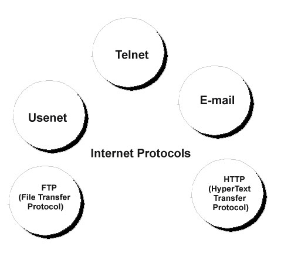

Well, the most common protocol used is the "Internet Protocol Suite", otherwise known as TCP/IP. TCP/IP is the Transmission Control Protocol and Internet Protocol. It is sometimes known as the "DoD model" since it was the US Department of Defence which funded the development of TCP/IP. TCP/IP provides connections, from one end to another. To put it simply, it is the rules that the internet uses for putting addresses on letters, sending and then receiving them.

Domain Name System
Domain Name System, or DNS, is the system that turns web addresses, www.google.com, into their IP addresses. This is because networks connect with IP addresses, and DNS is required to translate the easy-to-remember addresses into hard-to-remember IP addresses. There are many DNS servers, with the most important being the "root name servers".DNS is the reason that the internet is so easy to use for end users, yet many people do not even know that DNS exists.
The other common protocols are...
HTTP
FTP
SMTP
POP3
IMAP
Telnet
VoIP
Usenet
The most common type of internet traffic is HTTP. HTTP (Hyper Text Transfer Protocol) is the transmission of "hypermedia" information. To understand this, you need to first understand hypertext. Hypertext is words with a structure, that uses links between the different bits of text. HTTP is used to move hypertext around the internet. (It's more complex than this, but we only need a basic understanding.)
FTP, or File Transfer Protocol, is the protocol used to transfer files from one computer to another, across a network, or across the internet. This is often used by companies, with files being transfered to web-servers, which can then serve these files via HTTP. FTP is also used with many game servers, with content being uploaded via FTP. Both Internet Explorer and Windows have native FTP clients, and you are able to connect to FTP servers which you have access to.
The next three - SMTP, POP3 and IMAP - are all related protocols. SMTP stands for "Simple Mail Transfer Protocol", POP3 is "Post Office Protocol, Version 3" and IMAP is "Internet Message Access Protocol". All three are used with email, with SMTP being the transfer of mail from email server to email server, whilst POP3 and IMAP are used for a person to contact their mail server, downloading their emails. To put it simply, SMTP is when someone sends a letter, and the post office moves it to a sorting centre, whilst POP3 and IMAP is the local postman who delivers it to your door.
As with the mail protocols, the next two are related. Telnet is the protocol for sending telephone signals over a network. It essentially encodes the signals from phone, gives them a destination, and shoves them out into the network. They are then decoded at the other end, making a phone call. Fairly interesting. VoIP is slightly different. VoIP stands for "Voice over Internet Protocol". Now, VoIP uses different codecs (coder, decoder) to encode and decode the signals from the microphones, sending it in a packet to its destination, where it is decoded. It is very similar to Telnet, but the receiver is a computer, not a phone.
Usenet is a news group protocol. Users read and post messages, articles or posts (normally called news) to categories called newsgroups. The news is stored on central servers, though there is no single central server.